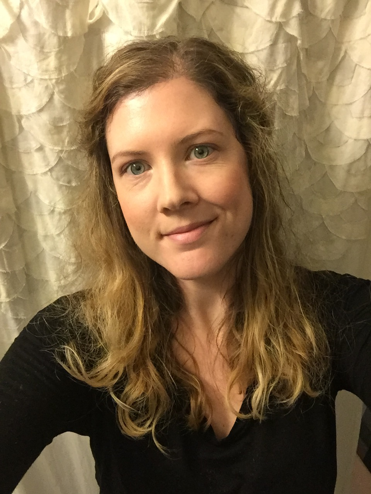

 I use my Art Historian mindset, experience in technology, and passion for education to build and improve the delivery and design of knowledge sharing in the blended classroom. I encourage getting lost down the internet rabbit hole. I love changing your mind about technology. And I believe using organizational strategies and practicing healthy mindful habits are key for a productive and balanced life.